Genetic Screening for Pregnancy in Canada
- Screening is not diagnosis. NT, eFTS, the anatomy scan and NIPT all give a risk. Only CVS or amniocentesis confirms. A positive NIPT still needs an invasive test.
- Primary prevention = the history. Take a 3-generation pedigree. The red flags are consanguinity, developmental delay or autism, congenital anomalies, ≥3 miscarriages, infertility (including male CBAVD → CF), early heart disease or sudden death, neonatal death, and ethnicity.
- Ethnicity → carrier screen: European → CF. Mediterranean, Middle Eastern, Asian and African → thalassemia and hemoglobinopathies (MCV <80, electrophoresis, start with the mother). Ashkenazi Jewish → Tay-Sachs, Canavan, familial dysautonomia. French-Canadian (Bas-St-Laurent, Gaspésie, New Brunswick) → Tay-Sachs, 1/14. Anabaptist → the LHSC community panel.
- Fragile X / FMR1: a full mutation (>200 CGG) causes fragile X syndrome in boys. A premutation (~55–200) causes POI before 40 in women and FXTAS (tremor and ataxia, often mislabelled Parkinson's) in older men.
- Timeline: NIPT ≥9 wk → NT and eFTS 11–13+6 wk → CVS 11–13 wk → amnio 15–20 wk → MSS 16–20 wk → anatomy scan 18–20 wk. Termination is an option only before 24 weeks.
- NT >3.5 mm → aneuploidy (T21, T13, T18, 45,X), congenital heart disease, Noonan syndrome, skeletal dysplasia.
- NIPT (placental cell-free DNA in the mother's blood) is funded in Ontario for previous trisomy, maternal age ≥40, NT >3.5 mm or positive eFTS. It detects about 99% with <1% false positives. It screens T21, T13, T18 and the sex chromosomes only, not single-gene disease.
- CVS vs amnio: CVS is earlier but carries a higher loss risk, plus maternal cell contamination and confined placental mosaicism. Amnio samples fetal cells, so neither problem applies.
- A Robertsonian translocation trisomy means testing the parents. A balanced carrier parent means high recurrence risk, so offer PGT or early prenatal diagnosis next time and cascade testing to relatives.
- Never assume, never judge, offer every option. Religion does not predict what a couple will choose.
Learning Objectives
- Develop an approach to asking relevant family and genetic history.
- List ethnicities (and conditions) requiring specific fetal screening.
- Identify red flags and indications for Prenatal Genetics referral.
- Describe the timing and process of fetal genetic screening.
- Define non-invasive prenatal testing.
- Define invasive prenatal testing.
- Define preimplantation genetic screening and diagnosis.
- Assess your own and future patients' values and beliefs about genetic testing and actions.
This is Dr. Maha Saleh's asynchronous module, 50 minutes in three parts. She is a clinical geneticist at LHSC who does general and prenatal genetics, and she declares no conflicts of interest. The three parts are primary prevention (12 min), non-invasive screening (14 min) and invasive testing (19 min), and this page follows that order. It builds on the pedigree and inheritance material from Foundations. It also sits beside 4.2 for IVF and 4.9 for pregnancy loss.
The Big Picture: Two Kinds of Prevention
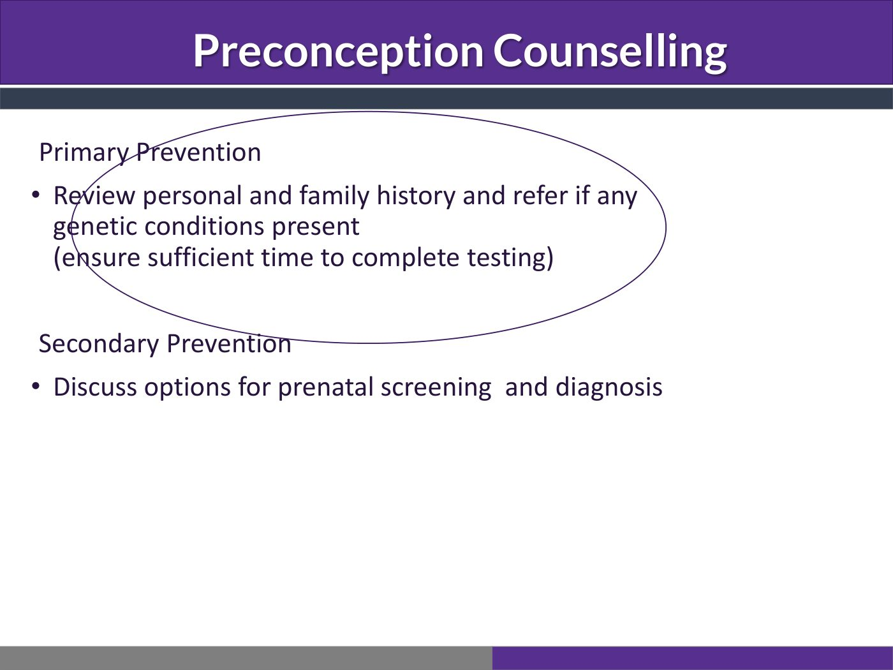
| Primary prevention | Secondary prevention | |
|---|---|---|
| When | Preconception | During an ongoing pregnancy |
| What | Personal and family history, ethnicity, carrier screening, healthy habits | Prenatal screening (non-invasive) → diagnosis (invasive) |
| Goal | Spot red flags and refer in time to test | Give information and management options |
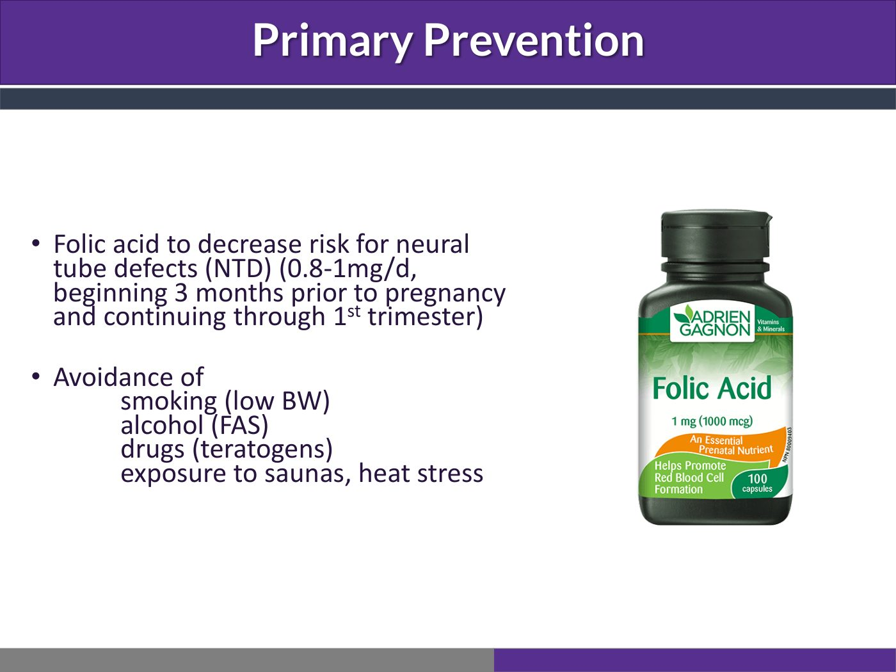
Folic acid 0.8–1 mg/day, from 3 months before conception through the 1st trimester, to reduce NTD risk. Avoid smoking (low birth weight), alcohol (FAS), drugs (teratogens), and saunas or heat stress.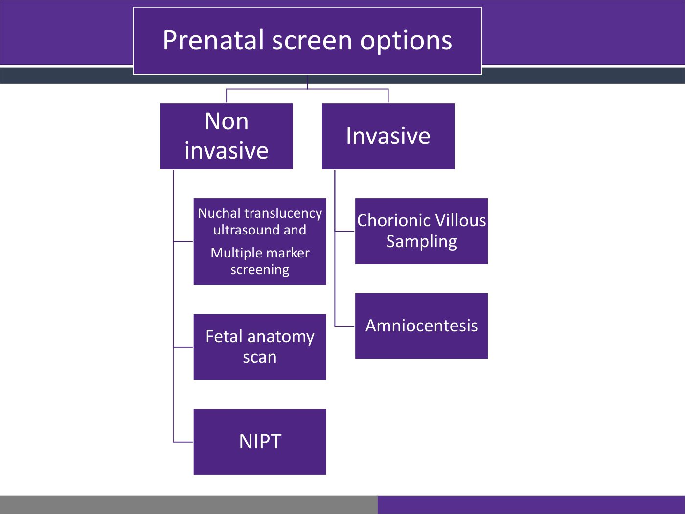
The map for the rest of the module. Non-invasive tests are screens; invasive tests are diagnostic.Part 1 — The Family History
Take a three-generation pedigree, which you drew in Foundations. Use the standard symbols: circles for females, squares for males, shading for affected individuals and an arrow for the proband. A pregnancy of unknown sex is drawn as a diamond, and a miscarriage or termination as a small triangle. Record ethnicity on both sides.
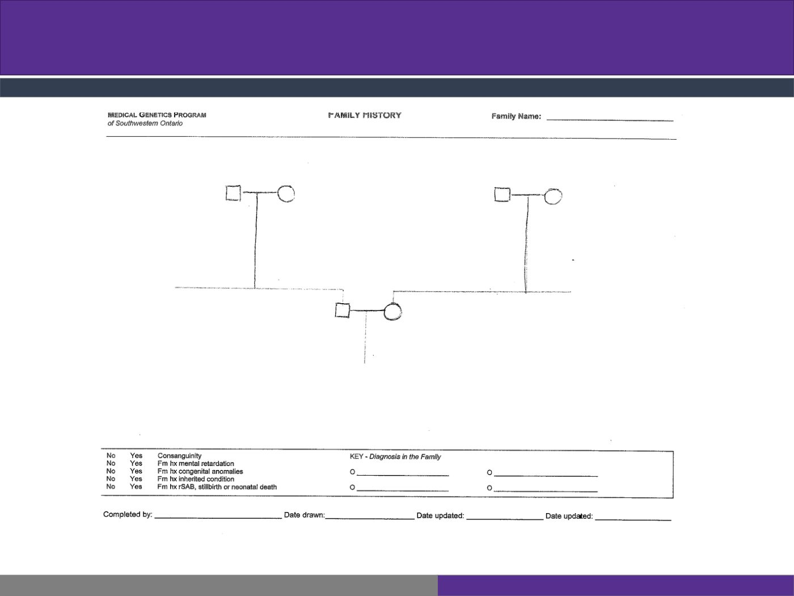
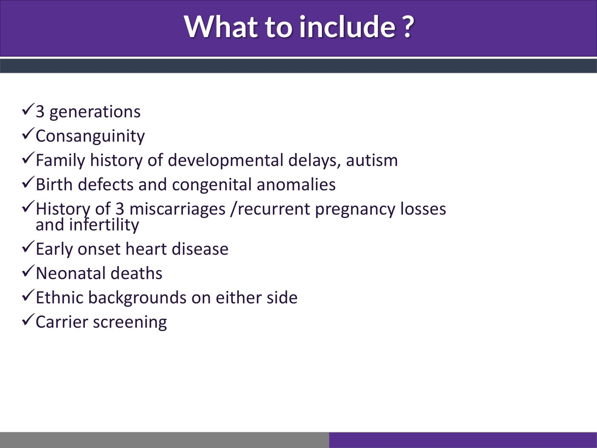
What to ask about.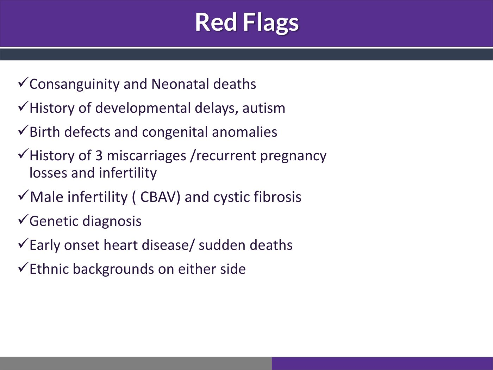
What prompts a referral to Genetics.| Red flag | What it makes you think of |
|---|---|
| Consanguinity (first cousins? second?) | Autosomal recessive disease |
| Developmental delay or autism, especially in males | Fragile X and other X-linked conditions |
| Birth defects (heart defect, cleft palate, extra digits) | Chromosomal or syndromic cause |
| ≥3 miscarriages or infertility | A balanced translocation in a parent |
| Male infertility (CBAVD) | Congenital bilateral absence of the vas deferens points to cystic fibrosis |
| Early heart disease or sudden death | Hereditary cardiac conditions |
| Neonatal death, known genetic diagnosis, ethnicity | Specific recessive disease or carrier screening |
Fragile X and the FMR1 Spectrum
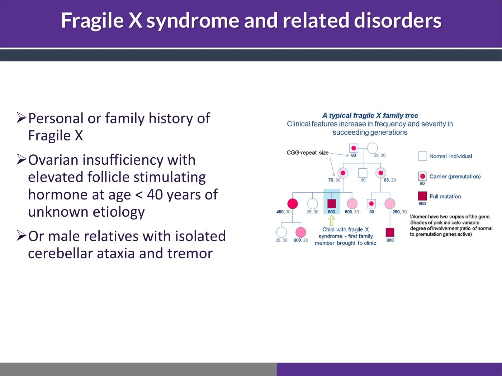
Fragile X is the most common single-gene cause of developmental delay in boys. The inheritance is X-linked. The gene is FMR1, and the mutation is a CGG triplet-repeat expansion. The repeat size decides which condition you see:
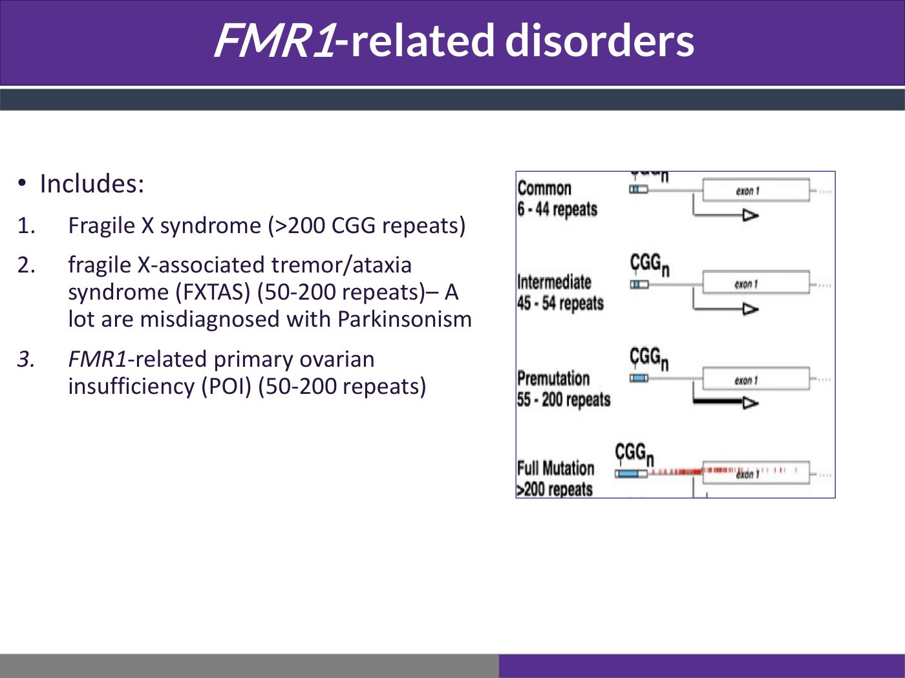
| CGG repeats | Category | Clinical picture |
|---|---|---|
| 6–44 | Normal | — |
| 45–54 | Intermediate | — |
| 55–200 | Premutation | Women: POI, with raised FSH and menopause before 40 of no other known cause. Men: FXTAS, a late-onset tremor and cerebellar ataxia that is often misdiagnosed as Parkinson's. |
| >200 | Full mutation | Fragile X syndrome: developmental delay, large head, long face, prominent forehead and chin, protruding ears, joint laxity, and large testes after puberty. |
A woman with unexplained POI before 40 may be a premutation carrier. If she conceives before her ovaries fail, the repeat can expand to a full mutation in her child, and a son will have fragile X syndrome. So early menopause in a female relative counts as a red flag, even though it doesn't sound like a genetics question.
Ethnicity-Based Carrier Screening
Carriers are healthy because they have one working copy. The problem arises when two carriers have a child, who then has a 1 in 4 chance of being affected (autosomal recessive).
| Ancestry | Screen for | Carrier frequency | How |
|---|---|---|---|
| European (or personal or family history, or clinical features of CF) | Cystic fibrosis | ~1 in 24 (spoken) | Recurrent mutation analysis |
| Mediterranean, Middle Eastern, Asian, African | Thalassemia and hemoglobinopathies | — | Check MCV <80 fL, then Hb electrophoresis. Always start with the mother and test the partner only if she is a carrier. |
| Ashkenazi Jewish | Tay-Sachs, Canavan, familial dysautonomia (and the rest of the SickKids AJ panel) | 1/30 · 1/37 · 1/32 | Blood sent to the SickKids lab |
| French-Canadian (Bas-St-Laurent, Gaspésie, New Brunswick) | Tay-Sachs | 1/14 | Carrier screening |
| Anabaptist (Amish, Old Order Mennonite) | Community-specific panels | — | LHSC requisition. Local midwives know it well. |
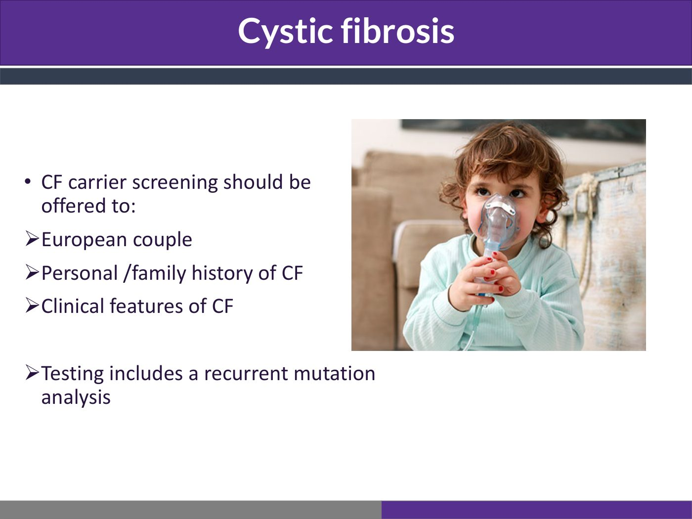
CF: offer it to European couples.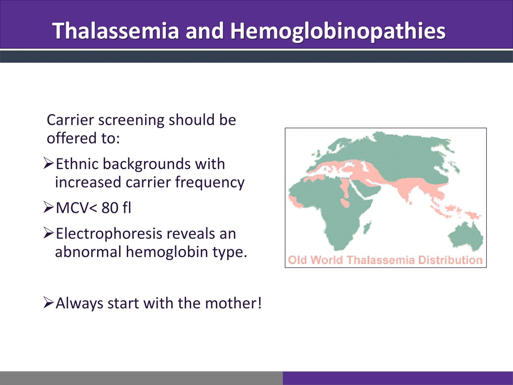
Thalassemia: the Old World belt. Start with the mother.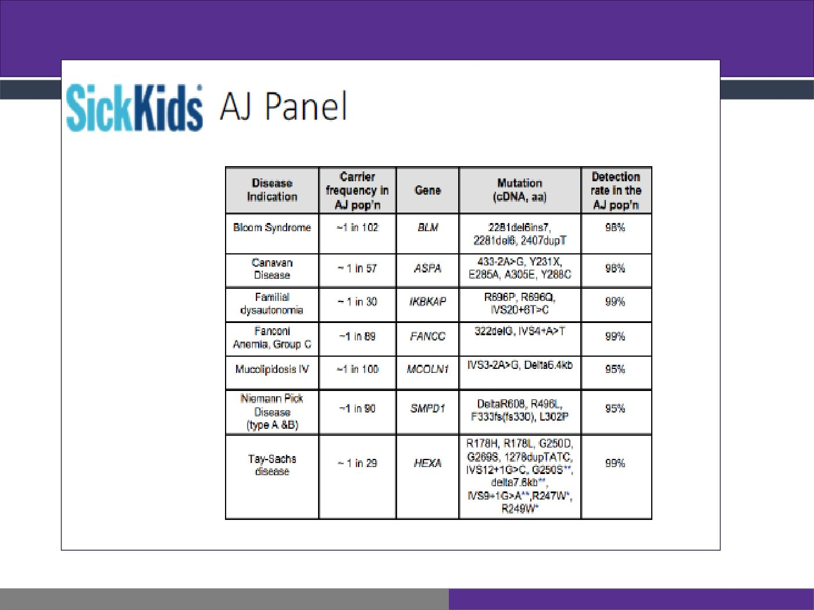
The full SickKids Ashkenazi Jewish panel. Tay-Sachs is the most common, at ~1 in 29–30.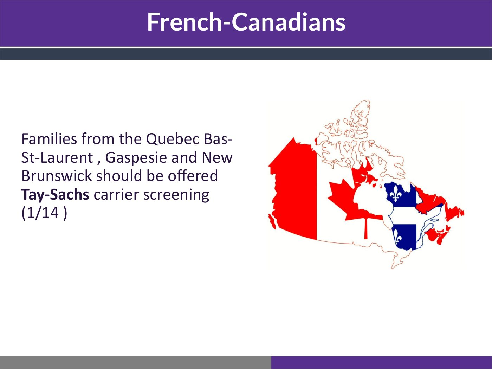
French-Canadians carry Tay-Sachs too, at an even higher rate of 1/14.![London Health Sciences Centre requisition titled Carrier Screening for Anabaptist Couples. Amish testing panel (Milverton-related): cerebral atrophy (ARCA syndrome), congenital glaucoma, congenital sodium diarrhea, cystic fibrosis, cystinosis, ECO syndrome, Fraser syndrome, galactosemia, HARS deficiency. Old Order Mennonite testing panel: biotinidase deficiency, familial hemophagocytic lymphohistiocytosis, glycogen storage disease IV, maple syrup urine disease type 1A, limb-girdle muscular dystrophy, MCAD deficiency, pernicious anemia, Pretzel syndrome.](../../../../assets/images/week-4/genetic-screening/anabaptist-panel.jpg)
Part 2 — Why Offer Prenatal Screening (and Why Not)
Screening is offered, always optional, and couples can opt out.
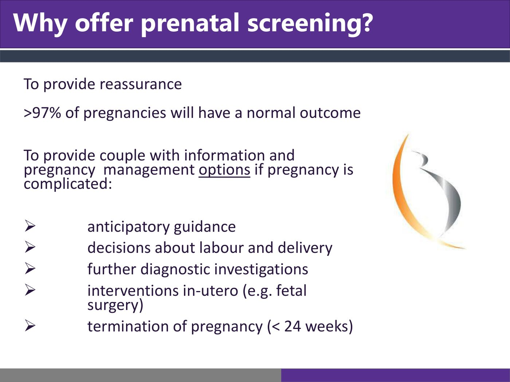
For: reassurance (more than 97% of pregnancies are normal), plus anticipatory guidance, delivery planning, further testing, fetal surgery, or termination before 24 weeks.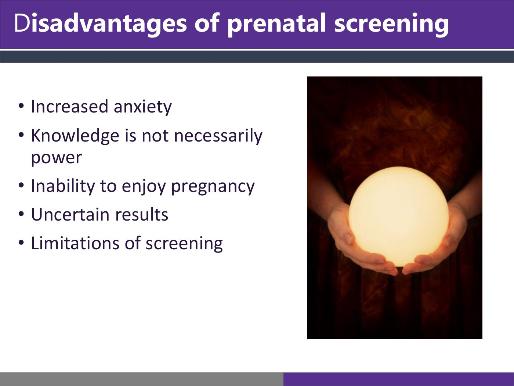
Against: anxiety, uncertain results, false positives. "Knowledge is not necessarily power."She describes a mother with an abnormal screen or an uncertain ultrasound who spent the rest of the pregnancy overwhelmed, and then delivered a healthy baby. That is the cost of a false positive, and it belongs in the counselling before the test, not after.
Nuchal Translucency
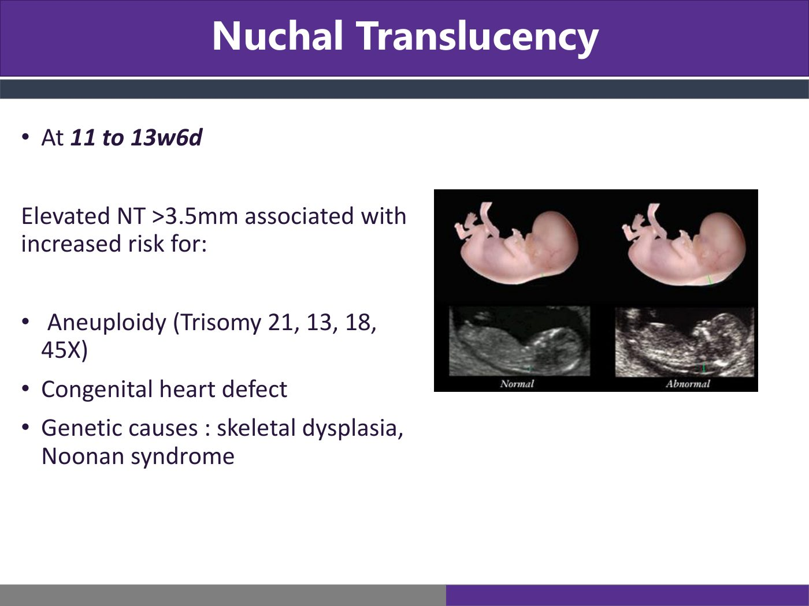
A trained sonographer measures the fluid behind the fetal neck. Excess fluid reflects trouble with the heart or lymphatics, and that is why the associations are:
- Aneuploidy: T21, T13 (Patau), T18 (Edwards), and 45,X (Turner). Turner fetuses can become frankly hydropic.
- Congenital heart defects.
- Single-gene causes: Noonan syndrome, skeletal dysplasias.
| Turner syndrome | Noonan syndrome | |
|---|---|---|
| Cause | Chromosomal: 45,X, or mosaics (45,X/46,XX; 45,X/46,XY), or isochromosome Xq | Single-gene, several genes, autosomal dominant |
| Karyotype | Abnormal | Normal |
| Sex | Female | Males and females |
| Features | Short stature, webbed neck, streak ovaries (delayed puberty, infertility), visual-perceptual difficulties. Cognition usually normal. | Looks like Turner. Congenital heart disease and cardiomyopathy. |
| Runs in families? | No | Yes |
The slides illustrate both syndromes with photographs of affected children. They are left off this page and their features are listed in the table above instead.
Multiple Marker Screening, the Anatomy Scan and Soft Markers
Placental and fetal-liver biomarkers in the mother's blood, combined with maternal age, give a calculated risk for T21 (± T18), reported against a cut-off of about 1 in 200.
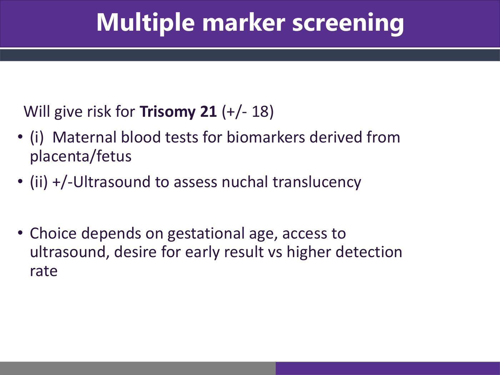
Choose based on gestational age, ultrasound access, and early result vs detection rate.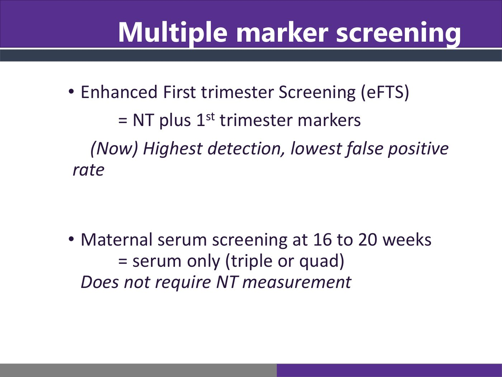
eFTS = NT + 1st-trimester markers. MSS = serum only, at 16–20 weeks.| eFTS (enhanced first-trimester screen) | MSS (maternal serum screen) | |
|---|---|---|
| Components | NT + 1st-trimester serum markers | Serum only (triple or quad) |
| Timing | 11–13 wk | 16–20 wk |
| Performance | Best of the serum screens: highest detection, lowest false positives | Lower detection |
| Use when | Default | No ultrasound access, or presenting after 14 weeks and past the NT window |
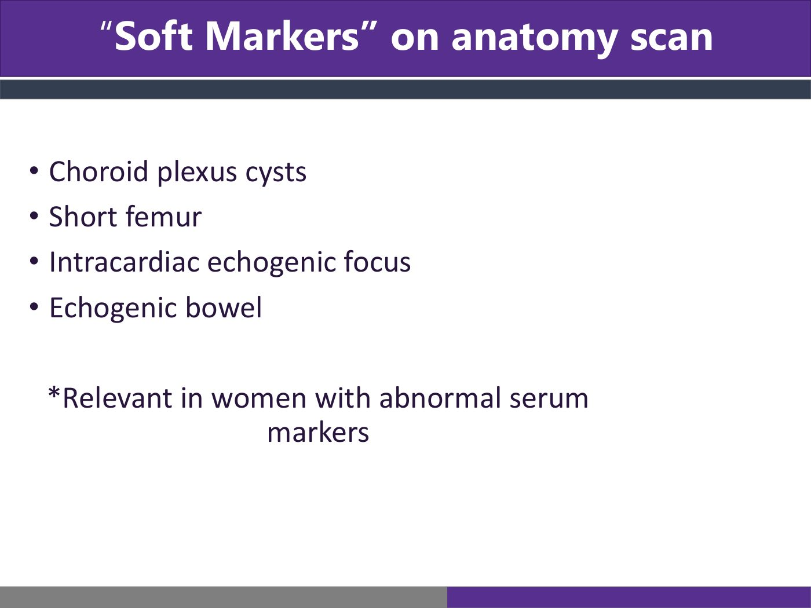
Anatomy scan at 18–20 weeks: a head-to-toe check of brain, heart, hands, feet and genitalia. Soft markers matter mainly when the serum screen is also abnormal.NIPT
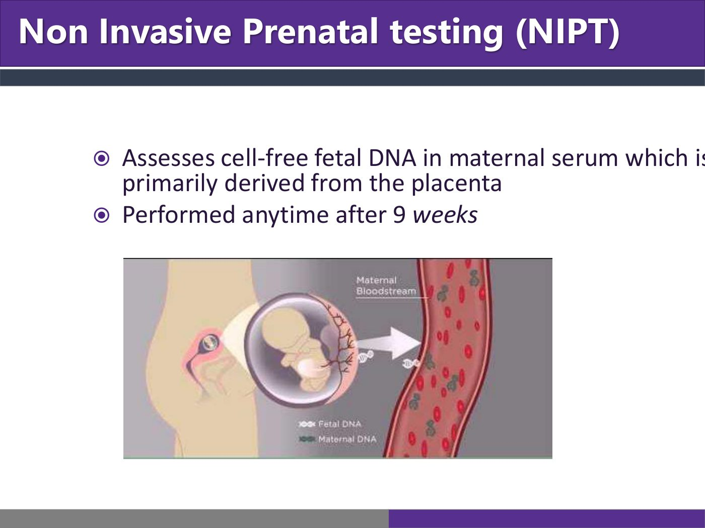
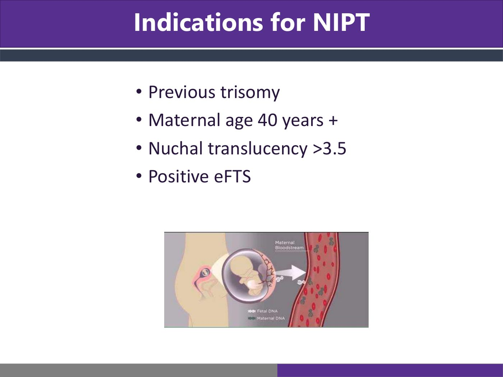
OHIP-funded indications. A previous trisomy qualifies at any age, even a 20-year-old.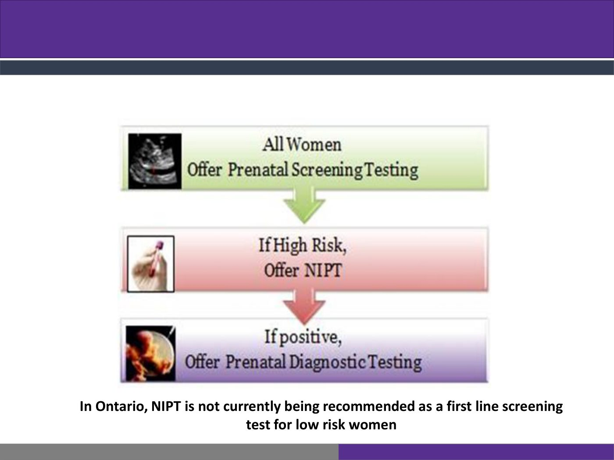
The Ontario pathway: screen everyone, give NIPT to the high-risk group, and confirm any positive with a diagnostic test.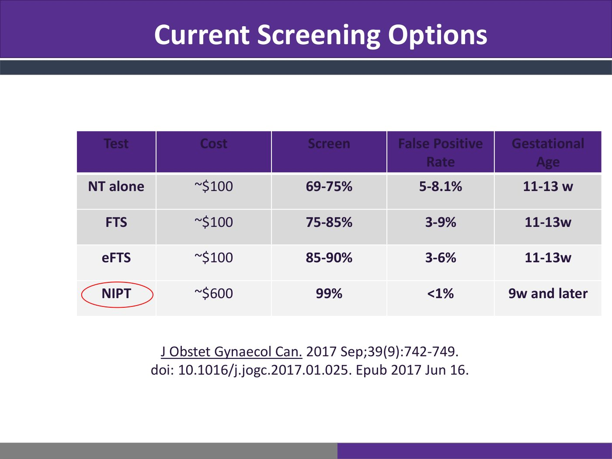
| Test | Cost | T21 detection | False positive | When |
|---|---|---|---|---|
| NT alone | ~$100 | 69–75% | 5–8.1% | 11–13 wk |
| FTS | ~$100 | 75–85% | 3–9% | 11–13 wk |
| eFTS | ~$100 | 85–90% | 3–6% | 11–13 wk |
| NIPT | ~$600 (she says ~$550 privately) | 99% | <1% | ≥9 wk |
NIPT screens only the common aneuploidies (T21, T13, T18) and the sex-chromosome aneuploidies. It is still a screen, so a positive result needs CVS or amniocentesis to confirm it. It says nothing about single-gene conditions such as NF1, Noonan syndrome or Huntington's. That point is exactly what the module's knowledge check tests (below). Because it tests only the mother's blood, there is no miscarriage risk.
Part 3 — Invasive Testing: CVS and Amniocentesis
Invasive testing gives a definitive diagnosis. It can detect aneuploidy and other chromosomal imbalances, or provide fetal DNA for single-gene testing when the family mutation is known (for example, Marfan syndrome in a parent). Maternal-fetal medicine specialists perform both procedures under ultrasound guidance.
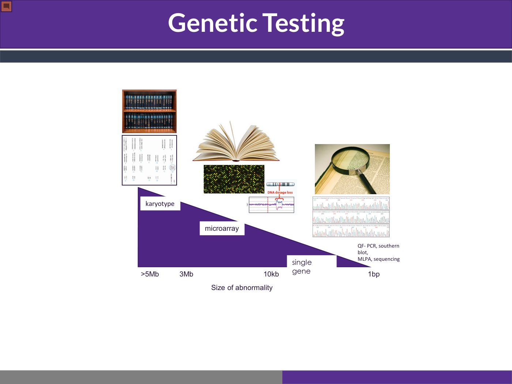
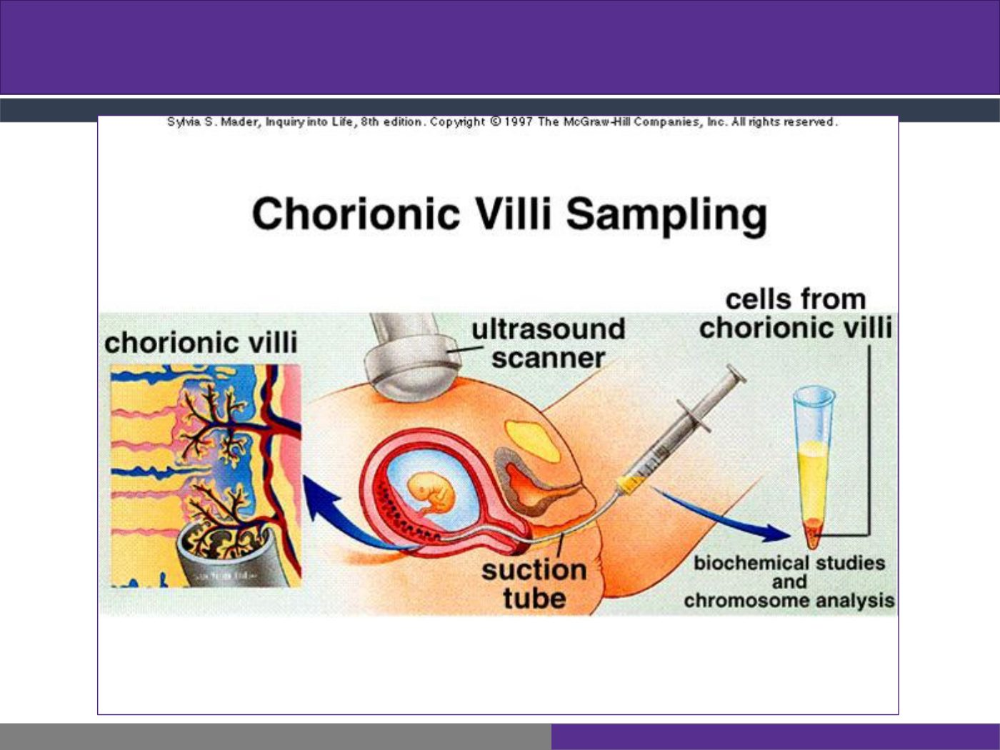
CVS samples the placenta (chorionic villi).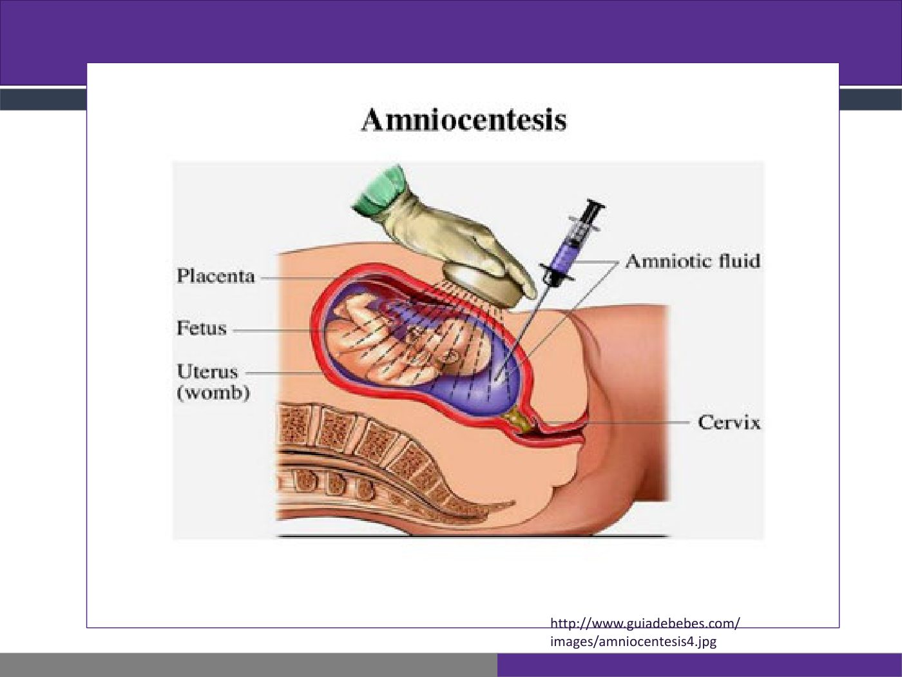
Amniocentesis samples amniocytes, fetal skin cells shed into the fluid.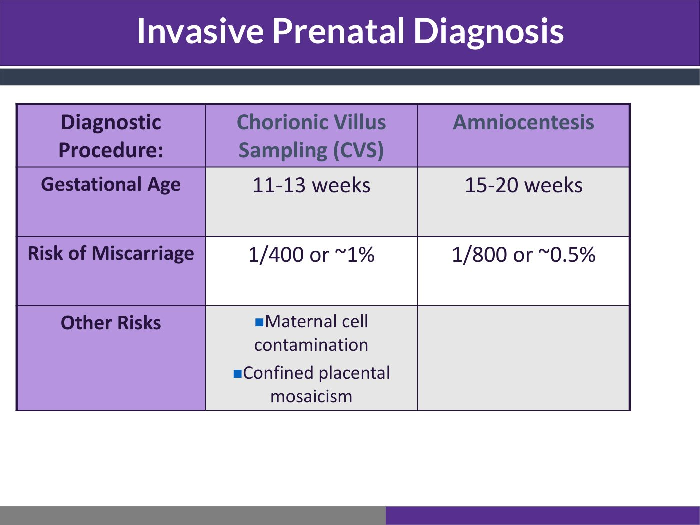
| CVS | Amniocentesis | |
|---|---|---|
| Samples | Placenta (villi) | Amniotic fluid (fetal cells) |
| When | 11–13 wk, the same window as the NT scan | 15–20 wk (usually from 16) |
| Miscarriage risk | Higher: "1/400 or ~1%" on the slide, "1%" spoken | Lower: "1/800 or ~0.5%" on the slide; some centres quote 1/1000 |
| Maternal cell contamination | Yes, because villi contain maternal tissue | No |
| Confined placental mosaicism | Yes. Rarely, the placenta carries a change the fetus doesn't. | No, because it samples the fetus, not the placenta |
| Advantage | Earlier answer | Truly representative of the fetus |
Discrepancy in the source: the slide's "1/400 or ~1%" is internally inconsistent, since 1/400 is 0.25%, and the same goes for "1/800 or ~0.5%". For exams, remember the relationship: CVS carries a higher loss risk than amniocentesis. Dr. Saleh's spoken figures are about 1% for CVS and 1/1000 at some centres for amnio.
Timelines: Why the Clock Drives the Choice
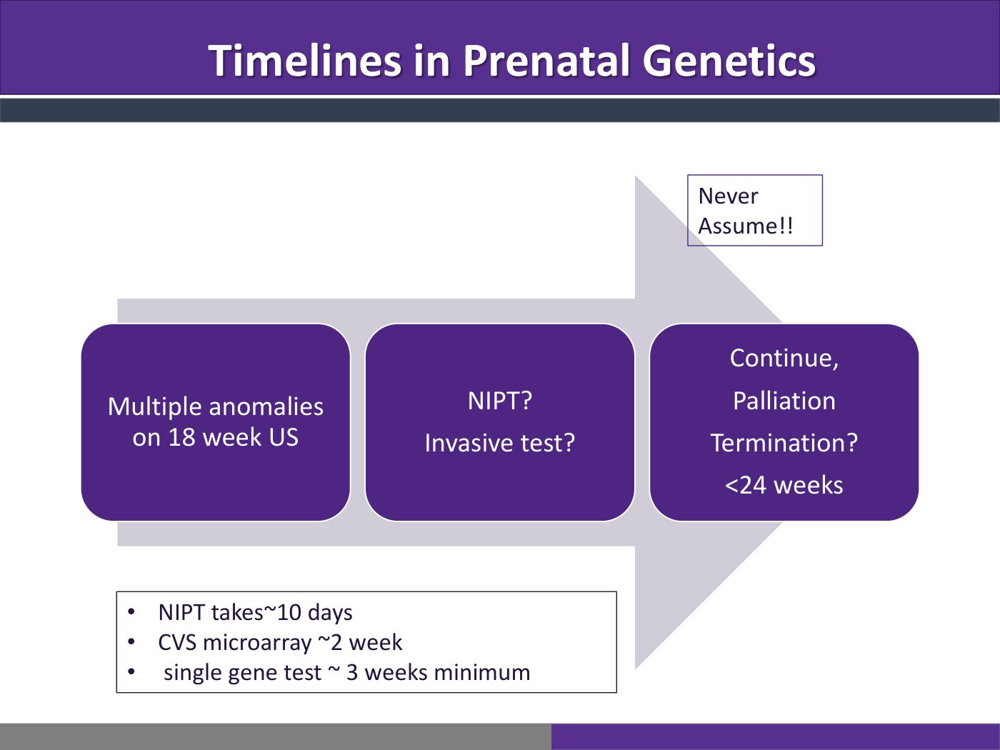
| Test | Turnaround |
|---|---|
| NIPT | ~10 days |
| Microarray (on CVS or amnio) | ~2 weeks |
| Single-gene test | ~3 weeks minimum |
The questions are: what are we suspecting, how long does each test take, and what will the family do with the answer? The answer might mean termination (which must happen before 24 weeks), NICU planning, or palliation and taking the baby home. If NIPT would take 10 days and a positive would still need an amnio plus 2 more weeks, it can make more sense to go straight to amniocentesis.
Values, Beliefs and Ethics
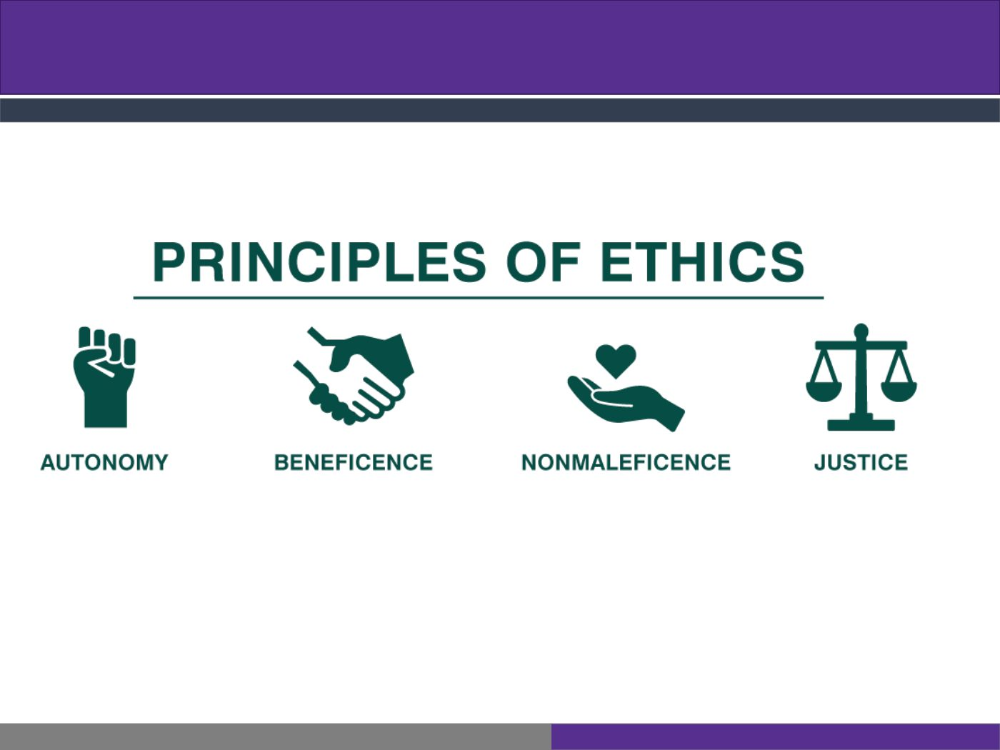
- Culture, personal and religious beliefs, plus personal and family experience with genetic diagnoses, all shape choices. A family that has already had two trisomies may not want a third.
- Never assume. She has seen religious Amish, Mennonite and Muslim couples choose termination, and couples told the fetus had T13 or T18 who declined all testing and carried to term. Religion does not predict the decision.
- Offer all options to everyone, regardless of background. Never judge.
Preimplantation Genetic Testing (PGT)
PGT means testing IVF embryos before transfer and implanting only unaffected ones. Her example is a couple with Huntington's disease in the family: autosomal dominant, a 50% risk in every pregnancy, progressive and untreatable, so they are unwilling to take the chance. The technique was first developed in the late 1980s, when PCR was used to determine the sex of embryos in carriers of X-linked disorders.
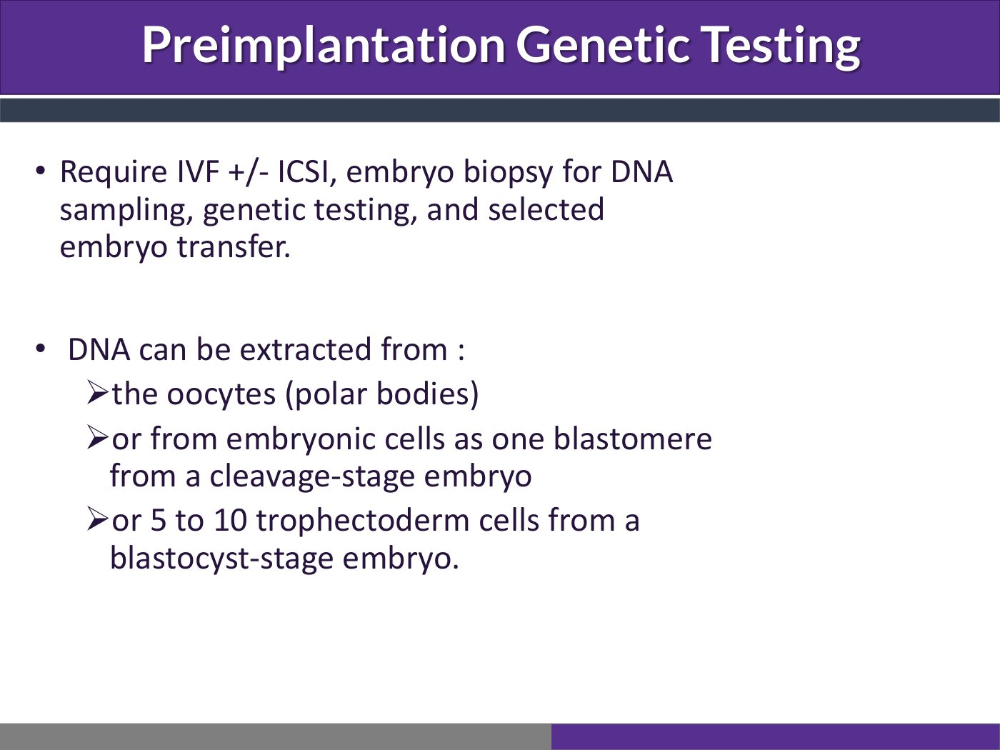
Requires IVF ± ICSI. DNA can come from a polar body, one blastomere (cleavage stage), or 5–10 trophectoderm cells (blastocyst).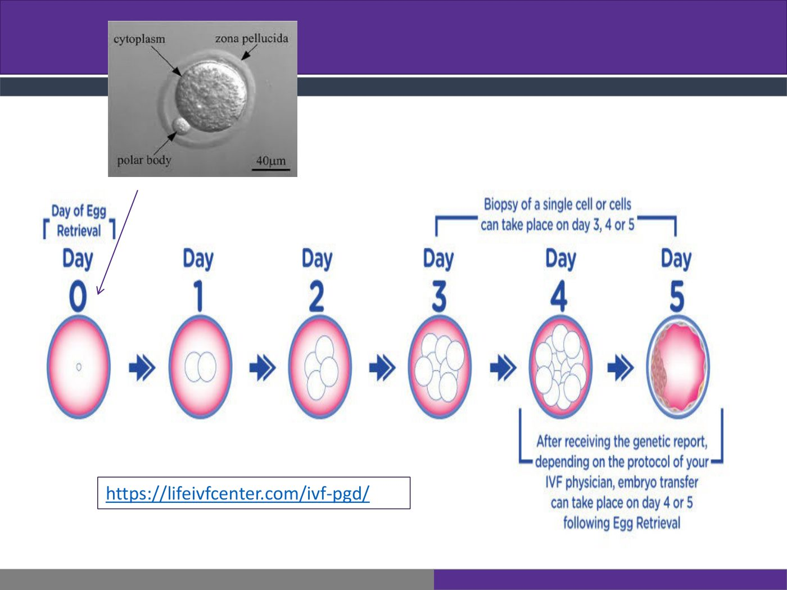
Biopsy on day 3–5. She recommends the trophectoderm at the blastocyst stage.- Testing methods: PCR or multiplex PCR for single genes, and FISH or microarray for translocations and de novo aneuploidy.
- Cost: the first IVF cycle is funded, but the PGT itself is not and costs about $6,000–15,000.
- Caveat: the few cells biopsied may not represent the whole embryo. Trophectoderm becomes placenta. So she recommends confirming with invasive testing once the pregnancy is established.
Case: Doris
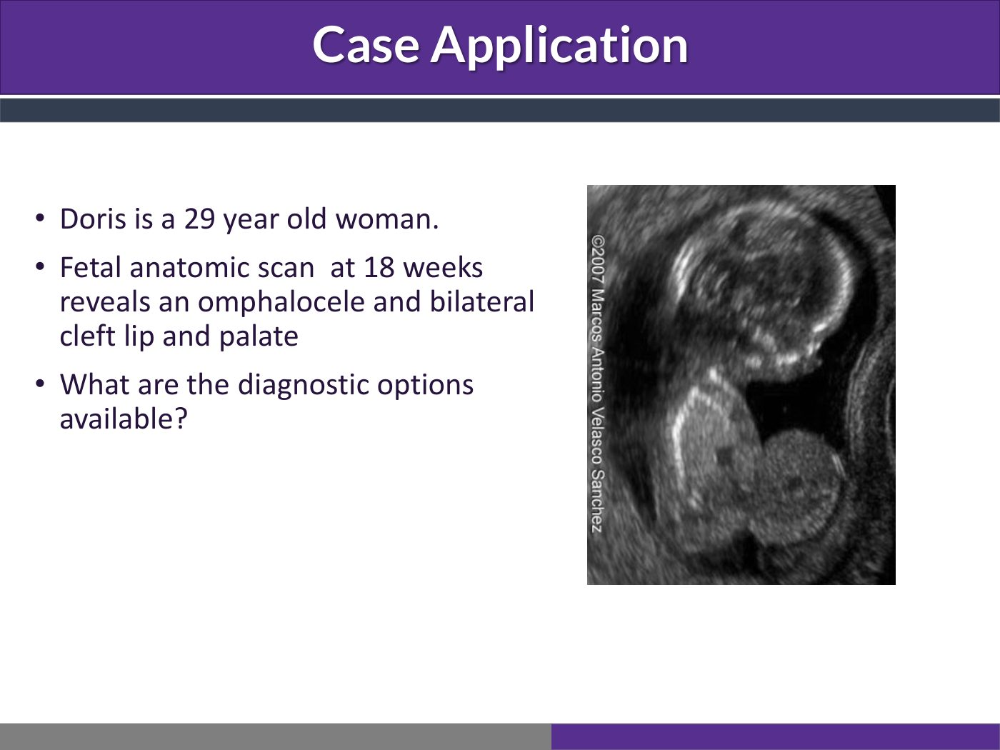
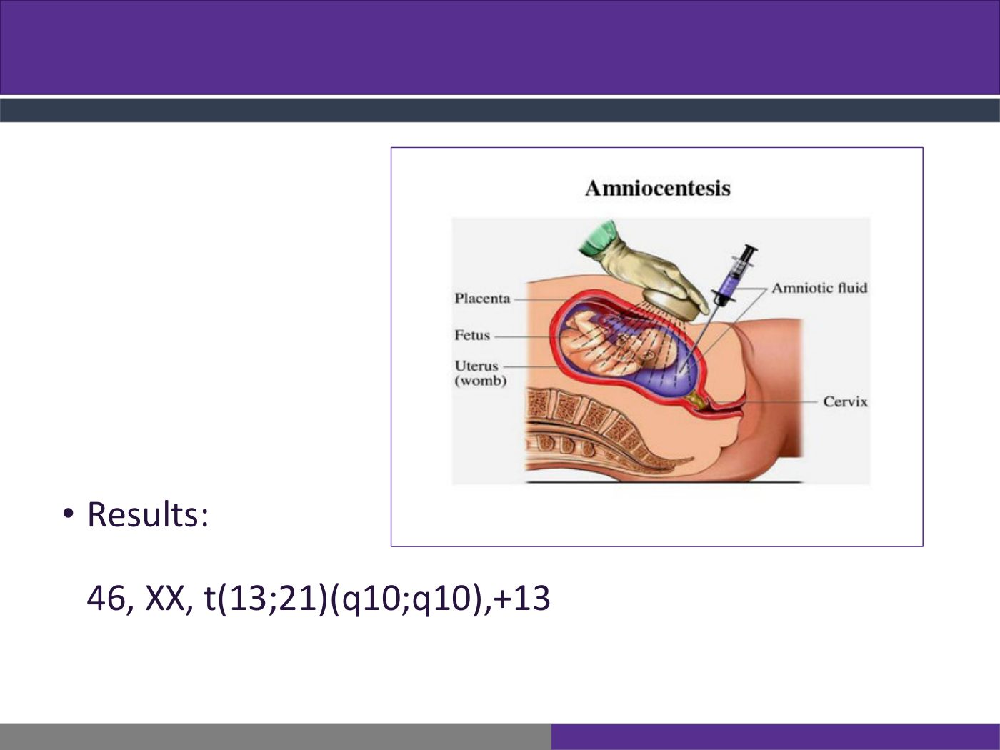
46,XX,t(13;21)(q10;q10),+13. The count is 46, but extra chromosome 13 material is fused onto a 21 in a Robertsonian translocation (both are acrocentric, with no meaningful p arm). This is a translocation trisomy 13.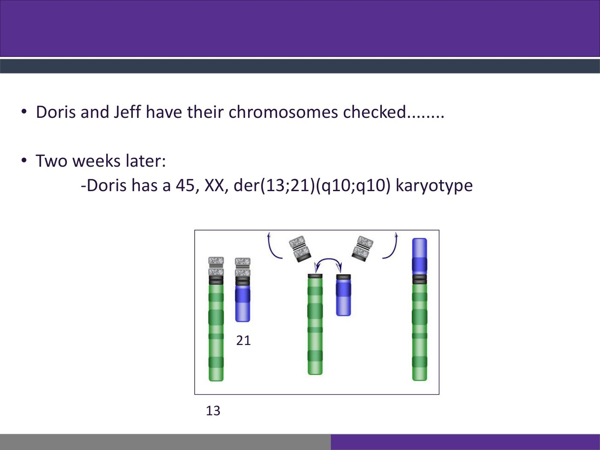
Doris: 45,XX,der(13;21)(q10;q10). She is a balanced carrier with 45 chromosomes and no missing or extra material.Free trisomy 13, with three separate copies, comes from nondisjunction, and testing usually stops there. A translocation trisomy can be inherited from a balanced carrier parent, so both parents are tested. Balanced carriers often present with recurrent miscarriage, because unbalanced conceptions are lost. That is why ≥3 miscarriages is a red flag in Part 1.
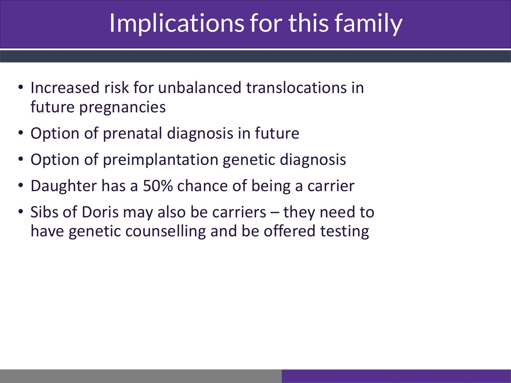
| For this pregnancy | For future pregnancies | For the wider family |
|---|---|---|
| Continue or terminate (the answer came before 24 weeks). If continuing, choose conservative or aggressive management at delivery, from holding the baby and making memories to NICU care. | High recurrence risk. Options are PGT with IVF, or NIPT from 9 weeks followed by early invasive testing. | A daughter has a 50% chance of being a balanced carrier. Doris's siblings may be carriers too and need counselling and testing (cascade testing). |
Trisomy 13 and 18 are often called lethal, but not every affected baby dies at birth. Technology can sustain life for long periods, and she has a 3-year-old patient with trisomy 13. Families understand "lethal" in different ways, and a lethal diagnosis does not automatically mean no intervention.
Summary
- Offer prenatal screening to every pregnancy, after a full discussion of risks and benefits.
- Couples can opt in or out.
- Every couple has a 2–3% chance of a baby with a congenital anomaly regardless of screening. Screening can reassure, but it never guarantees.
Check Yourself: the Module's Knowledge Check
Alice is 29 with NF1, confirmed by a molecular test that found her pathogenic mutation. She knows it is dominant, with a 50% recurrence risk. She is now pregnant and wants prenatal diagnosis.
Amniocentesis provides fetal DNA to test for her known familial mutation. eFTS and NIPT screen only for aneuploidy, not single-gene conditions. NF1 has no known prenatal ultrasound findings.
Amniocentesis is done at 15–20 weeks. Option C, 11–13 weeks, is the window for eFTS and CVS. CVS would also work for a known mutation, but it wasn't offered as an option here. Discrepancy in the source: the module's feedback says NIPT is done "after 10 weeks", but the slides and lecture say after 9 weeks.
Built from Dr. Maha Saleh's asynchronous module "Genetic Screening for Pregnancy in Canada": three Panopto mini-lectures (12, 14 and 19 min) and their three slide decks (21, 20 and 25 slides), plus the module's two knowledge-check questions. All figures are slides from those decks. Slides built around photographs of identifiable patients (a boy with fragile X syndrome, children with Turner and Noonan syndromes, an infant with cleft lip) are left out, and their features are written out instead. The auto-transcripts needed the usual corrections: Dr. Saleh appears as "Doctor Marsala", premutation as "free mutation", proband as "crow band", nuchal translucency and NT as "knuckle translucency", "anti" and "empty", teratogens as "two regions", Patau as "Fattore", hydropic as "hydrophobic", OHIP-funded as "or have funded", Mennonite as "Monday night", omphalocele as "old fellow SEAL" and "fallacy", trisomy 13 as "guys me 13", placental mosaicism as "placental mysticism", and trophectoderm as "triple ectoderm". Where the spoken numbers differ from the slides, the slides are used and the spoken figure is noted. This applies to the FMR1 repeat thresholds (spoken as "up to 40" and "50 to 200"), NIPT cost ($550 spoken, ~$600 on the slide) and the miscarriage risks. The screening-performance table is cited to JOGC 2017, so some figures and Ontario funding details may have changed since. No claims on this page were added from outside the module.